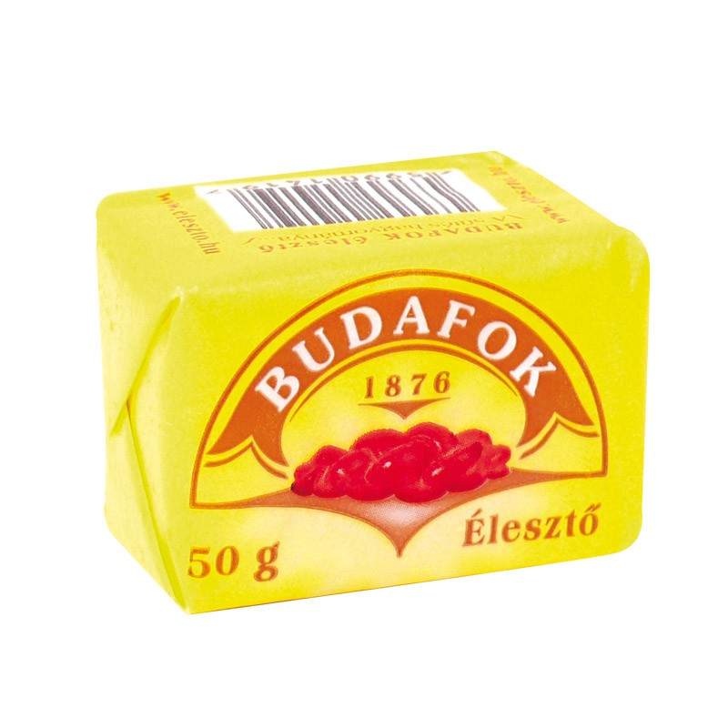
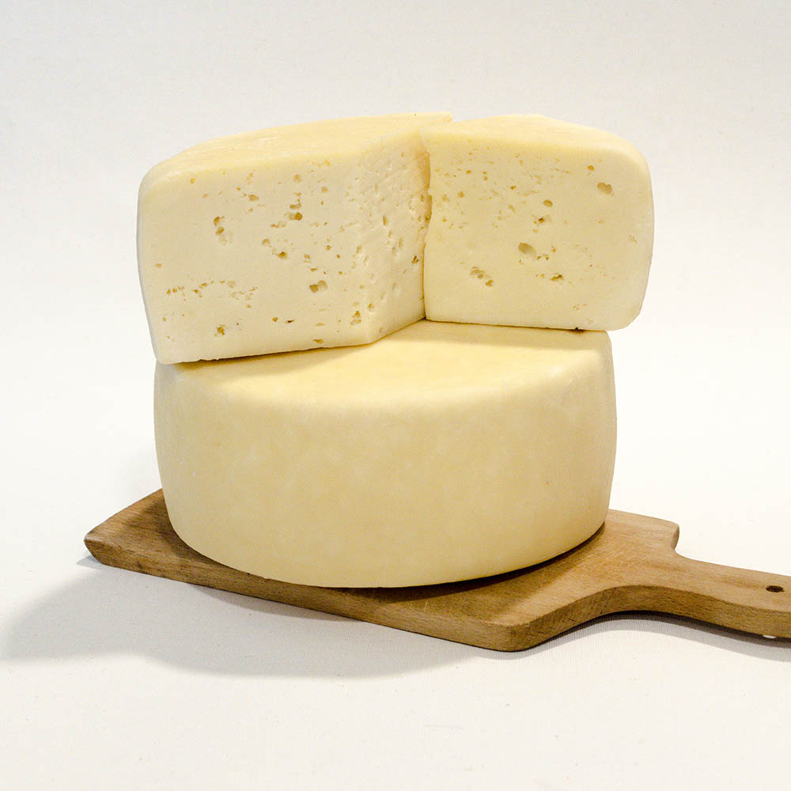

A Lángos Factory kizárólag magas minőségű, tiszta búzalisztet használ. A lisztet a legjobb minőségű búzából őröljük, hogy a lángosok puha, könnyű és omlósak legyenek. A lisztet a legmodernebb technológiával dolgozzuk fel, hogy a lángosok tökéletes állagúak legyenek. 🌾
A Lángos Factory kizárólag minőségi, tiszta, helyi forrás vizet használ. A vizet a legjobb minőségű forrásokból nyerjük, hogy a lángosok frissek és ízletesek legyenek. A vizet a legmodernebb technológiával tisztítjuk. 💧
A Lángos Factory kizárólag minőségi, tiszta sót használ. A sót a legjobb minőségű sólelő helyekről nyerjük, hogy a lángosok ízletesek és kiegyensúlyozottak legyenek. 🧂
A Lángos Factory kizárólag minőségi, friss élesztőt használ. Az élesztőt a legjobb minőségű gabonából készítjük, hogy a lángosok puha, könnyű és omlósak legyenek. Az élesztőt a legmodernebb technológiával dolgozzuk fel, hogy a lángosok tökéletes állagúak legyenek. 🍞
A Lángos Factory kizárólag minőségi, friss olajat használ. Az olajat a legjobb minőségű napraforgóból nyerjük, hogy a lángosok ízletesek és egészségesek legyenek. Az olajat a legmodernebb technológiával dolgozzuk fel, hogy a lángosok tökéletes állagúak legyenek. 🌿
A Lángos Factory kizárólag minőségi, friss sajtot használ. A sajtot a legjobb minőségű tejből készítjük, hogy a lángosok ízletesek és krémesek legyenek. A sajtot a legmodernebb technológiával dolgozzuk fel, hogy a lángosok tökéletes állagúak legyenek. 🧀
A Lángos Factory kizárólag magas minőségű, friss tejfölt használ. A tejföl a legjobb minőségű tejből készül, hogy a lángosok ízletesek és krémesek legyenek. A tejföl a legmodernebb technológiával készül, hogy a lángosok tökéletes állagúak legyenek. 🥛